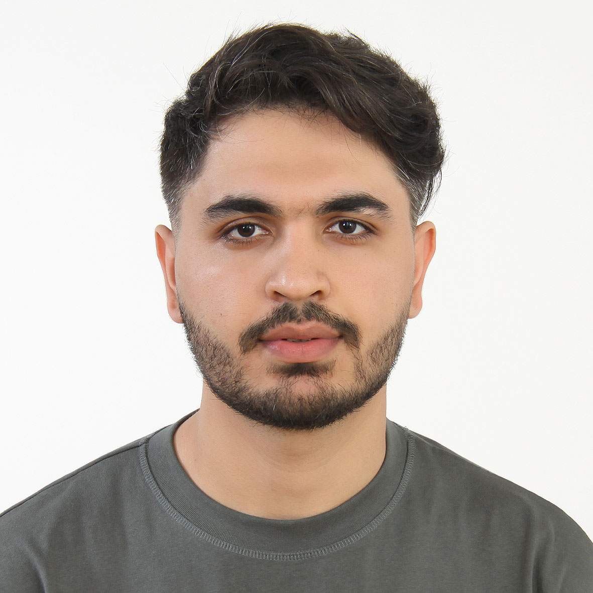
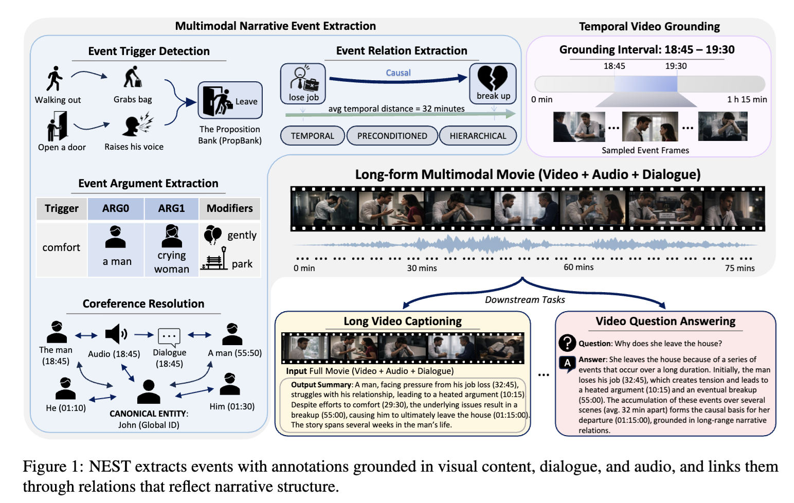
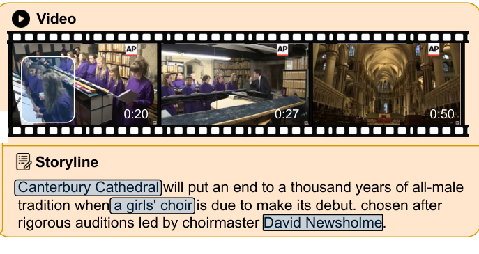
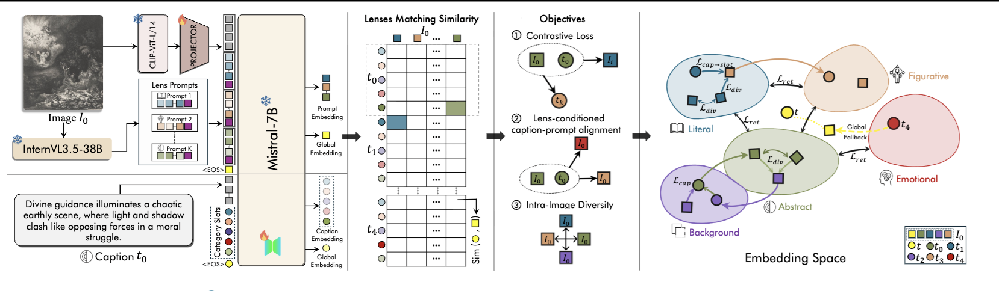
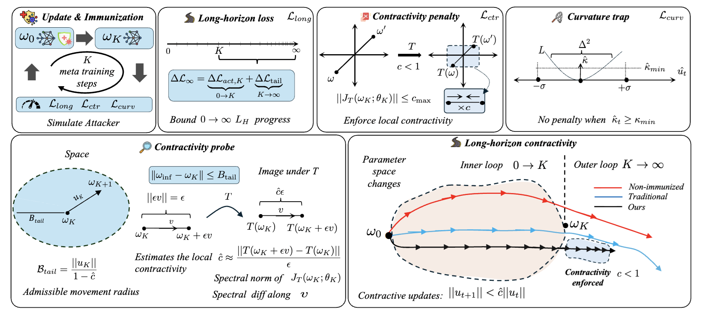
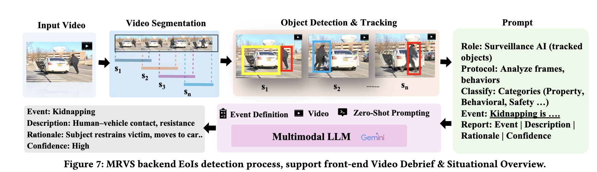
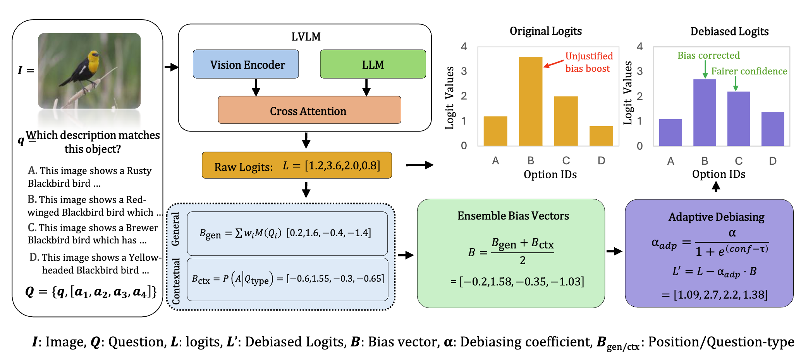
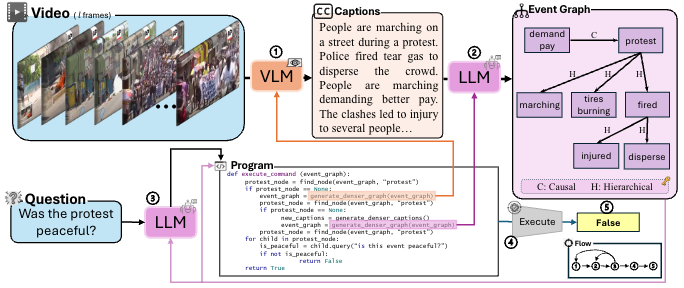

Ali Asgarov
Ph.D. Student in Computer Science, Virginia Tech
About
Third-year Ph.D. student in Computer Science at Virginia Tech, working with Dr. Chris Thomas on video-language understanding and cross-modal reasoning. Previously M.Sc. at George Washington University.
News
 Joined Amazon as a PhD Applied Scientist Intern · Fall 2026Joined Amazon as a PhD Applied Scientist Intern · Summer 2026
Joined Amazon as a PhD Applied Scientist Intern · Fall 2026Joined Amazon as a PhD Applied Scientist Intern · Summer 2026Selected Publications

NEST: Narrative Event Structures in Time for Long Video Understanding
EMNLP 2026 · Main
Recent progress in vision-language models has enabled processing of increasingly long video sequences, but handling extended token streams does not translate to understanding complex narrative structure in long videos. Existing long-video benchmarks focus on needle-in-a-haystack retrieval rather than evaluating how low-level actions form events, interact across time, and drive narratives, for example whether a model can connect an early job loss to a later relationship breakup despite intervening scenes or flashbacks. We introduce NEST (Narrative Event Structures in Time for Long Video Understanding), a dataset of 1,005 full-length movies (avg. 98 minutes), each annotated with about 103 multimodal narrative events grounded in visual content, dialogue, and audio. NEST links these events through relations that reflect narrative structure, including explicit temporal ordering, hierarchical composition, and long-range dependencies. We introduce baselines for event trigger detection (ETD), event localization (EL), event argument extraction (EAE), and event relation extraction (ERE). The benchmark is highly challenging for grounded event discovery, with the best performance across evaluated zero-shot models on main evaluation subsets remaining below 8% for ETD, 6% for EL, and 11% for EAE. In contrast, ERE is more tractable once events are given, reaching 34.23% F1 zero-shot and 49.20% F1 after fine-tuning.
@inproceedings{asgarov-etal-2026-nest,
title = "{NEST}: Narrative Event Structures in Time for Long Video Understanding",
author = "Asgarov, Ali and
Narasimhan, Kaushik and
Sarker, Najibul Haque and
Alomari, Hani and
Tang, Chia-Wei and
Sivakumar, Anushka and
Abdul Hakim, Zaber Ibn and
Mallampati, Shaurya and
Thomas, Chris",
editor = "Lee, Hung-Yi and
Dev, Sunipa and
Li, Jessy and
Elliott, Desmond",
booktitle = "Proceedings of the 2026 Conference on Empirical Methods in Natural Language Processing",
month = oct,
year = "2026",
address = "Budapest, Hungary",
publisher = "Association for Computational Linguistics",
url = "https://aclanthology.org/2026.emnlp-main.2512/",
doi = "10.18653/2026.emnlp-main.2512",
pages = "57094--57129",
ISBN = "979-8-89176-459-0"
}
M3EC: A Multimodal Multidocument Benchmark for Event Extraction and Event Coreference Resolution
EMNLP 2026 · Main
@inproceedings{abdul-hakim-etal-2026-m3ec,
title = "{M}${}^3${EC}: A Multimodal Multidocument Benchmark for Event Extraction and Event Coreference Resolution",
author = "Abdul Hakim, Zaber Ibn and
Sarker, Najibul Haque and
Hussain, Aafiya and
Alomari, Hani and
Ishmam, Alvi Md and
Asgarov, Ali and
Tang, Chia-Wei and
Thomas, Chris",
editor = "Lee, Hung-Yi and
Dev, Sunipa and
Li, Jessy and
Elliott, Desmond",
booktitle = "Proceedings of the 2026 Conference on Empirical Methods in Natural Language Processing",
month = oct,
year = "2026",
address = "Budapest, Hungary",
publisher = "Association for Computational Linguistics",
url = "https://aclanthology.org/2026.emnlp-main.2502/",
doi = "10.18653/2026.emnlp-main.2502",
pages = "56843--56904",
ISBN = "979-8-89176-459-0"
}
Lenses: Toward Polysemous Vision-Language Understanding
CVPR 2026 · Main
Most vision-language models assume images have a single literal meaning, even though images are inherently polysemous. We propose a retrieval paradigm that models many-to-many relationships between images and text using interpretive lenses and introduce Lenses, a multi-prompt embedding model and dataset for polysemous image-text retrieval. The Lenses dataset contains 105,669 images and 732,405 captions, with each image paired with multiple captions and image-side prompts annotated across five categories: Literal, Figurative, Abstract, Background, and Emotional. Building on a multimodal large language model, the Lenses model uses learned lens tokens to extract lens-specific embeddings for every image and caption and compares these using a lens-masking similarity function with a global fallback that prioritizes same-lens matches while retaining a global pathway. Training uses a category-aware multi-positive contrastive loss and intra-set diversity regularization to align corresponding perspectives while preventing semantic collapse across lenses. We further propose lens-aware evaluation protocols, including category-aware ranking, that better reflect how humans match images and text. Experiments on the Lenses dataset and public benchmarks show that our model outperforms baselines on literal and non-literal retrieval and reduces over-reliance on literal cues.
@InProceedings{Alomari_2026_CVPR,
author = {Alomari, Hani and Asgarov, Ali and Thomas, Chris},
title = {Lenses: Toward Polysemous Vision-Language Understanding},
booktitle = {Proceedings of the IEEE/CVF Conference on Computer Vision and Pattern Recognition (CVPR)},
month = {June},
year = {2026},
pages = {37810-37820}
}
Immunizing Models Against Harmful Long-Horizon Fine-Tuning via Contractive Optimization Dynamics
CVPR 2026 · Main · Highlight
Fine-tuning has become the default way to adapt powerful foundation models, but this also enables low-cost repurposing for harmful objectives. Existing immunization methods try to optimize local geometry or simulate short attacker horizons, and penalize observed loss drops. However, in practice, downstream tuners run thousands of updates and overcome these short-horizon defenses.In this paper, we propose CLAMP (Contractive Long-horizon Attacker Mitigation via Progress-bounding), an immunization method that traps harmful fine-tuning by shaping the attacker's optimization dynamics rather than only the initial landscape. Our key idea is to make harmful training locally contractive, making each update smaller than the last. This yields a closed-form bound on the attacker's training beyond the attacker's simulated training steps. We also introduce a Hessian-free directional curvature penalty, to create adversarial landscapes along harmful descent directions. Our bi-level objective minimizes the attacker's predicted improvement from train step zero to infinity. Experiments show our method withstands long-horizon fine-tuning across classification, generative, and autoregressive settings, substantially reduces harmful task adaptation, while preserving benign utility and fine-tuneability.
@InProceedings{Sarker_2026_CVPR,
author = {Sarker, Najibul Haque and Ibn Abdul Hakim, Zaber and Asgarov, Ali and Tang, Chia-Wei and Ishmam, Alvi Md and Thomas, Chris},
title = {Immunizing Models Against Harmful Long-Horizon Fine-Tuning via Contractive Optimization Dynamics},
booktitle = {Proceedings of the IEEE/CVF Conference on Computer Vision and Pattern Recognition (CVPR)},
month = {June},
year = {2026},
pages = {34940-34949}
}
Designing Multi-Robot Ground Video Sensemaking with Public Safety Professionals
CHI 2026 · Main
Videos from fleets of ground robots can advance public safety by providing scalable situational awareness and reducing professionals' burden. Yet little is known about how to design and integrate multi-robot videos into public safety workflows. Collaborating with six police agencies, we examined how such videos could be made practical. In Study 1, we presented the first testbed for multi-robot ground video sensemaking. The testbed includes 38 events-of-interest (EoI) relevant to public safety, a dataset of 20 robot patrol videos (10 day/night pairs) covering EoI types, and 6 design requirements aimed at improving current video sensemaking practices. In Study 2, we built MRVS, a tool that augments multi-robot patrol video streams with a prompt-engineered video understanding model. Participants reported reduced manual workload and greater confidence with LLM-based explanations, while noting concerns about false alarms and privacy. We conclude with implications for designing future multi-robot video sensemaking tools.
@inproceedings{zhou2026multirobot,
author = {Zhou, Puqi and Asgarov, Ali and Hussain, Aafiya and Park, Wonjoon and Paudyal, Amit and Shrestha, Sameep and Tang, Chia-Wei and Lighthiser, Michael and Hieb, Michael and Xiao, Xuesu and Thomas, Chris and Hong, Sungsoo Ray},
title = {Designing Multi-Robot Ground Video Sensemaking with Public Safety Professionals},
booktitle = {Proceedings of the 2026 CHI Conference on Human Factors in Computing Systems},
series = {CHI '26},
publisher = {Association for Computing Machinery},
year = {2026},
month = apr,
pages = {1--22},
doi = {10.1145/3772318.3790679}
}
Benchmarking and Mitigating MCQA Selection Bias of Large Vision-Language Models
EMNLP 2025 · Main
Large Vision-Language Models (LVLMs) have achieved strong performance on vision-language tasks, particularly Visual Question Answering (VQA). While prior work has explored unimodal biases in VQA, the problem of selection bias in Multiple-Choice Question Answering (MCQA), where models may favor specific option tokens (e.g., "A") or positions, remains underexplored. In this paper, we investigate both the presence and nature of selection bias in LVLMs through fine-grained MCQA benchmarks spanning easy, medium, and hard difficulty levels, defined by the semantic similarity of the options. We further propose an inference-time logit-level debiasing method that estimates an ensemble bias vector from general and contextual prompts and applies confidence-adaptive corrections to the model's output. Our method mitigates bias without retraining and is compatible with frozen LVLMs. Extensive experiments across several state-of-the-art models reveal consistent selection biases that intensify with task difficulty, and show that our mitigation approach significantly reduces bias while improving accuracy in challenging settings. This work offers new insights into the limitations of LVLMs in MCQA and presents a practical approach to improve their robustness in fine-grained visual reasoning. Datasets and code are available at: https://github.com/Atabuzzaman/Selection-Bias-of-LVLMs
@inproceedings{atabuzzaman-etal-2025-benchmarking,
title = "Benchmarking and Mitigating {MCQA} Selection Bias of Large Vision-Language Models",
author = "Atabuzzaman, Md. and
Asgarov, Ali and
Thomas, Chris",
editor = "Christodoulopoulos, Christos and
Chakraborty, Tanmoy and
Rose, Carolyn and
Peng, Violet",
booktitle = "Proceedings of the 2025 Conference on Empirical Methods in Natural Language Processing",
month = nov,
year = "2025",
address = "Suzhou, China",
publisher = "Association for Computational Linguistics",
url = "https://aclanthology.org/2025.emnlp-main.1703/",
doi = "10.18653/v1/2025.emnlp-main.1703",
pages = "33548--33562",
ISBN = "979-8-89176-332-6"
}
ENTER: Event Based Interpretable Reasoning for VideoQA
NeurIPS 2024 MAR Workshop · Spotlight
In this paper, we present ENTER, an interpretable Video Question Answering (VideoQA) system based on event graphs. Event graphs convert videos into graphical representations, where video events form the nodes and event-event relationships (temporal/causal/hierarchical) form the edges. This structured representation offers many benefits: 1) Interpretable VideoQA via generated code that parses event-graph; 2) Incorporation of contextual visual information in the reasoning process (code generation) via event graphs; 3) Robust VideoQA via Hierarchical Iterative Update of the event graphs. Existing interpretable VideoQA systems are often top-down, disregarding low-level visual information in the reasoning plan generation, and are brittle. While bottom-up approaches produce responses from visual data, they lack interpretability. Experimental results on NExT-QA, IntentQA, and EgoSchema demonstrate that not only does our method outperform existing top-down approaches while obtaining competitive performance against bottom-up approaches, but more importantly, offers superior interpretability and explainability in the reasoning process.
@inproceedings{ayyubi2024enter,
title = {ENTER: Event Based Interpretable Reasoning for VideoQA},
author = {Ayyubi, Hammad and Liu, Junzhang and Asgarov, Ali and Hakim, Zaber Ibn Abdul and Sarker, Najibul Haque and Wang, Zhecan and Tang, Chia-Wei and Alomari, Hani and Atabuzzaman, Md. and Lin, Xudong and Dyava, Naveen Reddy and Chang, Shih-Fu and Thomas, Chris},
booktitle = {NeurIPS 2024 Workshop on Multimodal Algorithmic Reasoning (MAR)},
year = {2024},
note = {Spotlight},
eprint = {2501.14194},
archivePrefix = {arXiv},
primaryClass = {cs.CV}
}See Google Scholar for the full list.
Industry Experience
Machine Learning Engineer @ Polygraf AI
Dec 2023 – Aug 2024 · TX, USA
Machine Learning Engineer @ Revenue AI
Feb 2022 – Aug 2022 · AMS, NL
Machine Learning Engineer @ Voiceloft AI
Jan 2021 – Feb 2022 · DE, USA
Education
Virginia Tech · Ph.D. in Computer Science
2024 – Present · GPA: 4.0 · Advisor: Dr. Chris Thomas
George Washington University · M.Sc. in Computer Science
2022 – 2023 · GPA: 3.76
Honors & Awards
Patents
System and Method for Identifying and Determining a Content Source
US 2025/0165444 A1 · Google Patents